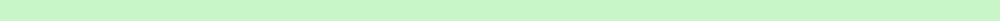
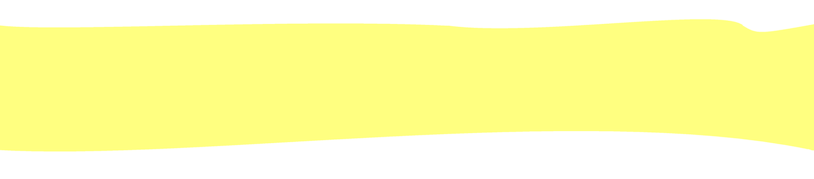
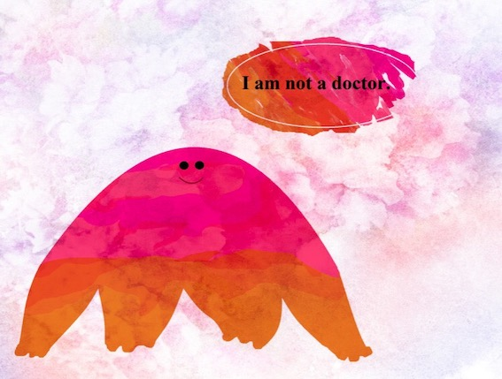
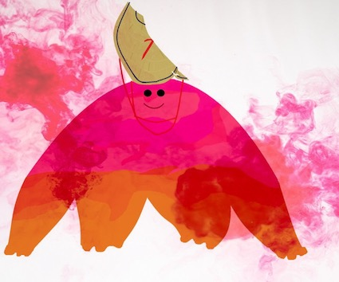

<!DOCTYPE html>
<html>
<head>

	<title>Test Page</title>

	<link rel="stylesheet" type="text/css" href="css/Muu.css">
	<style type="text/css"> text-align: center" </style>
	<style type="img{
	width:650px;
	border:1px #74c8d2;
	}

	"></style>


	<!doctype html>
<html>
  <head>
    
    <script src="https://kit.fontawesome.com/ff582e6495.js" crossorigin="anonymous"></script>

    <style>
* {
  box-sizing: border-box;
}

.box {
  float: left;
  width: 33.33%;
  padding: 50px;
}
.clearfix:after {
  content: "";
  clear: both;
  display: table;
}
img{
	float: left;
}
	p.one {
  border-style: solid;
  border-width: 6px;
}
	p.two {
		border-style: solid;
		border-width: 20px
		border-color:red;
	}
}
</style>
</head>
<body>
  </head>
</html>

	</style>
</head>
<body>
<p style="font-size: 80px; color: steelblue; text-align: left; font-family: verdana">
	<span class="fas fa-hospital-user"></span>
<a style="color: steelblue; font-size: 40px;"

	href="https://mutsumi-h.jp/" target="blank" title="Let's go to the website where Muu lives!"  >むつみホスピタルウェブサイト</a>
	

<h1 style="font-size: 100px; color: hotpink; text-align: center; font-family: verdana"> Mutsumi Hospital Representative </h1>

	
	
	
	
	

	<h2 class="two" style="font-size: 40px; color: dimgray;text-align: center; font-family: verdana; padding-top: 100px">This is Muu. Muu works at Mutsumi Hospital. Muu does not have a medical degree, but Muu helps people heal. Muu is very friendly and kind. </h2>

	
	<p class="one" style="font-size: 40px; font-family: verdana; color: steelblue; border-left-style: none;border-right-style: none; padding-top: 30px">  At Mutsumi Hospital, there is the concept of a road to recovery. It isn't straight or easy to navigate. That's why there are guides, like Muu, who will make it easier to recover.</p>

	

<br><br><br><br>

	

	<p class="one" style="font-size: 40px; color: steelblue; font-family: verdana; text-align:right; border-left-style: solid;border-bottom-style: none; border-right-style: none; border-top-style: none;">Muu is very sweet and helpful. Muu helps people recover, with a positive attitude. Other than that, we don't know <i>what</i> Muu is. Muu is decidedly mysterious, but Muu has <b><i>very</i></b> friendly energy. That is what matters. There are many guides on the road to recovery.<br></p>

	

	<h2 style="font-size: 100px;color: steelblue; text-align: center; font-family: arial">Let's Meet Muu!</h2>

<div class="clearfix">
  <div class="box" style="background-color:#74c8d2; font-family: arial">
  <p style="color: white; font-size: 30px">Muu is very active. Muu likes to dance and play softball.</p>
  </div>
  <div class="box" style="background-color:steelblue; font-family: arial">
  <p style="color: white; font-size: 30px">Muu likes to go bird-watching. Muu's best friend is a bird.</p>
  </div>
  <div class="box" style="background-color:#74c8d2; font-family: arial">
  <p style="color: white; font-size: 30px">Muu eats pudding every day. Muu also likes strawberries a lot.</p>
  </div>
</div>
	
	<p style="font-size: 60px; color: steelblue; text-indent: 30px">Let's learn facts about Muu's workplace!</p>


	<ul style="text-indent: 200px; color: dimgray; font-size: 40px">
		<li>Mutsumi Hospital supports mental health.</li>
		<li>There are both in-patient and out-patient facilities.</li>
		<li>There are many facilities, such as a restaurant and a lounge.</li>
		<li>Residents in long-term care stay for 3 months.</li>
		<li>Many medical professionals are there to help. </li>
		<li>You can learn more by looking at Mutsumi's social media!</li>
	</ul>

	

	<div style="font-size: 100px; text-align: center; color: dimgrey">

		<span href="https://twitter.com/MUTSUMI_1959" target="blank" title="twitter"class="fab fa-twitter-square"></span>
		<span href="〒770-0005 徳島県徳島市南矢三町３丁目１１−２３" target="blank" title="〒770-0005 徳島県徳島市南矢三町３丁目１１−２３" class="fas fa-map-marker"></span>
		<span href="https://www.instagram.com/mutsumihospital/" target="blank" title= "instagram" class="fab fa-instagram"></span>
	<br>
	<br>
 </div>

 
		<h2 style="font-size: 40px; color: dimgray; text-align: center; font-family: verdana">Muu is happy to help people in Tokushima. In fact, Muu was also born in Tokushima Prefecture, in 2019. Muu is very proud of Tokushima's natural and cultural wealth.</h2>
<br>
	<p style="font-size: 30px; color: steelblue; text-align: center; font-family: verdana"> There's no need to struggle alone, when people are here to help.</p>

		
		<br><br><br>

	

	<span style="font-size: 40px;color: steelblue" class="fas fa-hospital-user"></span>

	<a style="color: steelblue; font-size: 40px;"

	href="https://mutsumi-h.jp/" target="blank" title="Let's go to the website where Muu lives!"  >むつみホスピタルウェブサイト</a>

</body>
</html>

